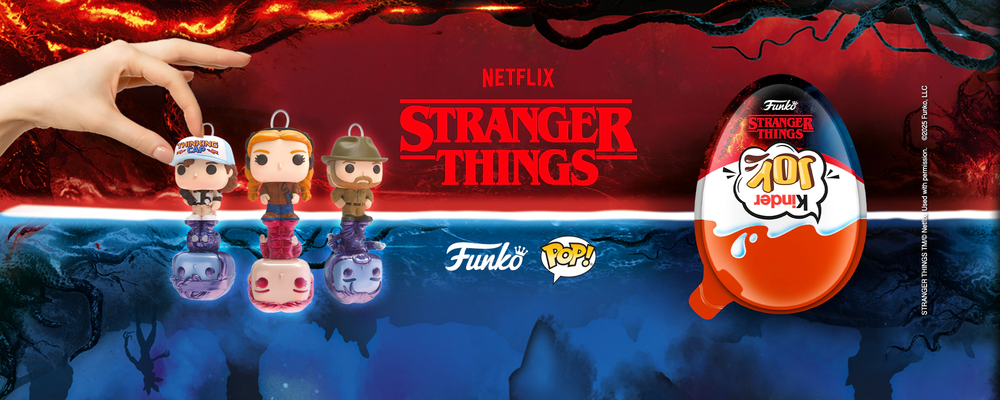
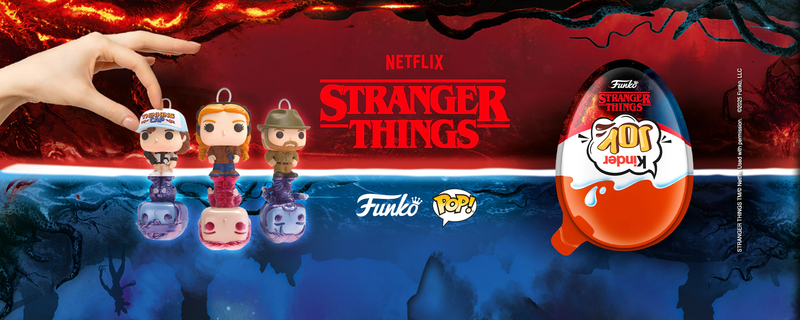

Stranger Things está de volta: a temporada mais sombria promete mexer com as emoções dos fãs

Depois de uma longa espera, Stranger Things retorna com uma nova temporada que promete ser a mais intensa e emocionante de toda a série. Ambientada novamente na misteriosa cidade de Hawkins, a produção da Netflix traz de volta nossos personagens favoritos — agora mais maduros e enfrentando desafios ainda maiores, dentro e fora do Mundo Invertido.Entre segredos, sustos e reviravoltas, a nova fase mistura nostalgia dos anos 80 com efeitos visuais impressionantes e uma trilha sonora de arrepiar. Os criadores, os irmãos Duffer, afirmam que esta temporada será um verdadeiro divisor de águas, com um tom mais sombrio e emocional, mostrando o amadurecimento do grupo e as consequências de tudo o que viveram até aqui.Com novas ameaças sobrenaturais, dilemas pessoais e aquele clima de amizade e aventura que conquistou o público desde o início, Stranger Things promete prender os espectadores do primeiro ao último episódio. Prepare-se: o Mundo Invertido nunca esteve tão perto — e o perigo nunca foi tão real.
A espera está quase no fim! A quinta e última temporada de Stranger Things vem aí para encerrar uma das
maiores histórias da Netflix com muita emoção, mistério e nostalgia dos anos 80. Depois de anos
acompanhando Eleven e o grupo de Hawkins enfrentando o Mundo Invertido, o público pode se preparar para
uma despedida de tirar o fôlego.Segundo os criadores, os irmãos Duffer, a nova temporada trará respostas
para todos os mistérios deixados para trás — e uma batalha final que promete ser a mais sombria e
intensa de toda a série. Além disso, os fãs podem esperar reencontros marcantes, novos perigos e cenas
que vão mexer com o coração de quem acompanhou essa jornada desde 2016.Os bastidores já estão a todo
vapor, e as primeiras imagens revelam que o clima será de puro suspense. O elenco original retorna
completo, e a Netflix promete uma produção à altura do fenômeno global que Stranger Things se
tornou.💥Prepare-se: Hawkins nunca mais será a mesma.Acompanhe todas as novidades, teorias e vazamentos
sobre Stranger Things 5 aqui no Three News, o seu portal para tudo o que acontece no mundo das séries!

Parece que o Mundo Invertido resolveu dominar também as prateleiras dos supermercados! Com a estreia da 5ª temporada de Stranger Things, várias marcas embarcaram na nostalgia dos anos 80 e lançaram produtos temáticos pra lá de criativos. A Pringles, por exemplo, apresentou uma nova batata com sabor “Demogorgon Heat” — uma mistura apimentada que promete ser tão intensa quanto as aventuras de Hawkins. Já a Yoki trouxe uma pipoca de micro-ondas inspirada na série, com embalagem retrô e um aroma irresistível de manteiga que é puro conforto para quem vai maratonar os novos episódios. E, claro, o clássico Kinder Ovo não ficou de fora: a nova edição temática vem com miniaturas colecionáveis dos personagens, perfeitas para quem ama um toque de mistério até na sobremesa. Esses lançamentos provam que Stranger Things não é só uma série — é uma experiência completa, que agora também dá pra saborear! 😋✨

 

Confira o teaser oficial da quinta temporada de Stranger Things! Clique no nosso amigo 💀